第五章 词典¶
1. 拿起词典独自上路¶
查词典与朗读一样是提高阅读理解能力的最直接有效的手段之一。
假设我们遇到一个 20 个词构成的句子，其中有 1 个生词。这个时候，我们应当去查词典，而不是乱猜 —— 尽管有时会猜中。假设我们在字典里查到之后发现这个单词有 3 个意思，那我们所面临的任务是怎样的呢？——我们要把已知的 19 个单词构成的含义弄明白，然后才能确定 “究竟那生词的 3 个意思究竟哪一个放到句子里才是恰当准确的？” 当然，更多的时候，我们运气没那么好。比如，这个句子里有 2 个单词不认识，于是我们去查词典，发现第一个单词有 3 个意思，而第二个单词有 7 个意思，那即意味着说，我们要在 21 种可能性中选且只能选择 1 种（能够使当前句子句意通畅的）组合。
这不就是 “阅读理解” 过程么？有什么比频繁参与阅读理解过程更有助于锻炼自己阅读理解能力的方法呢？有的时候我非常奇怪为什么那么多（好像至少超过 90%）的人放着最有效却无成本的学习方法（朗读、查词典）不用，一次又一次地浪费大块的时间和大把的金钱却又义无反顾地再去报另外一个所谓的培训班呢？倒也不是说所有的培训班都一点用没有，只是说总体上来看就算那些有用的培训班最终也不过作用有限而已。
2. 不查词典者死¶
我们身体的每一个器官都或多或少拥有一定的 “进化能力”。弹琴弹久了，手指就会变得更加灵活；长期坚持锻炼，心肺功能就会更加强大；话说得比别人更多，舌头就比别人更灵活 …… 而我们身上所拥有的进化能力最强的就是我们的大脑了。大脑进化能力最强，是因为它适应能力最强，但也恰恰因为如此，大脑的进化空间却不一定最大。这话听起来好像有点违背逻辑，但让我们看看适应能力太强会出现什么情况。
亚马逊丛林里有一种蝾螈，是科学家们的玩具，因为这种生物适应能力太强了：把它放在没有光线的地方，两天之内它就可能把眼睛退化掉；如果再把它拿到有光线的地方，两天之内它就会长出眼睛；把它扔到水里它就退化掉肺长出鳃，把它捞出来放到陆地上它就退化掉鳃长出肺……
“用进废退”。这种蝾螈的适应能力太强，乃至于亿万年来它根本就没有进化过，因为无需进化，因为环境的变化对它来说实在算不了什么。而某种意义上来讲，说得生动点，我们的大脑适应能力之强大就和这种蝾螈差不多，所以它会最大程度上最快地 “用进废退”。这也解释了为什么很多人 “不进步” 却也不觉得有什么不好，因为我们的大脑会迅速地适应当时的周遭环境 —— 不管那究竟是好还是坏。
英语老师与学生最大的不同可能只有一个，英语老师必须查词典（如果还有别的话，就是语法书之类的参考书），而学生却有除了查词典之外的另外一个选择 ——参加各种各样的课程。英语课上老师做什么呢？其实大抵上只不过是把昨天晚上他查过的单词、词组，以及他通过查词典（以及其它的工具书）再动脑才搞明白的句子给学生们讲一遍。而学生呢？坐在下面听。学生们倒是听了，然而，本质上却没有参与阅读理解的过程 —— 那个过程里应该有苦恼、迷失、无助、慌张（人人都讨厌这些）和恍然大悟（人人都想只要这个）；所以大多学生根本就没有动脑，于是顶多是以为自己搞懂了（事实上，没有之前的两个境界的铺垫，“蓦然回首” 根本看不见 “那人站在灯火阑珊处” 的。）
于是很多培训课程只不过是这样的：英语老师的大脑在迅速进化，因为他在不停地用着它，同时还赚着钱；而学生的大脑在迅速退化，因为他们根本不用它，并且（又一次）花着钱。——谁都不是故意的。这也是为什么我总是告诉学生，“你们要尽快摆脱对老师的依赖” 的重要原因，你必须做你自己的 “明师”，否则就做一辈子蝾螈吧 —— 弄不好下辈子还是，因为尽管智商并不一定遗传，但习惯几乎必然会被下一代继承。对于人来讲，
其实，词典不用一辈子每天都要查的 —— 查着查着就不用再查了，因为绝大多数已经搞定了。小的时候大家都背着《新华字典》上过学吧？当然，再后来是《现代汉语大词典》——没有谁到了初中以后还得必须天天背着它们吧？英文词典也一样，早晚有一天把它扔到书架上。只不过是最近一段时间（两三年？）需要它随时在手边而已。
3. 多一点点细心和耐心就能超凡脱俗¶
查词典并不难。但多一点点细心和耐心，却并不像想象得那么容易。我有一个经典的例句可以说明问题，是托福考试阅读部分中曾经出现过的一句话：
It was attempting to suggest that every disease and condition for which there had been no previous effective treatments might be responsive to vitamin therapies.
事实上，ETS 从来不自己创作文章，这句话是 Child Psychiatry and Human Development 杂志 1998 年第 3 期，Orthomolecular therapy: Its history and applicability to psychiatric disorders中的一段话。设计 SAT 考试的 Colledge Board 也是如此，SAT 考试中的阅读文章几乎篇篇都可以在互联网上找到原文。
也许读者会去词典里查 “attempting”、“responsive”、或者 “therapy” 是什么意思，但我见过的学生中几乎就没有人去查 “condition” 在这句话里究竟应该是什么意思。他们之所以没有想到去查 “condition”，是因为他们 “认识” 这个词，“condition：n. 条件、情况”。然而，就算除了 “condition” 之外的所有词汇都认识、并且每一个词在当前句子中的确切含义都完全了解的情况下，这句话如此理解难道就不觉得别扭么？
“and” 究竟是什么意思、应该怎么用，没有人不知道吧？“and” 前后的往往应该属于同一范畴 —— 这是基本的逻辑。现在 “and” 前面是 “disease”，这个单词的含义是 “疾病”，那么 “every disease and condition” 究竟应该是 “每一种疾病和条件”？还是 “每一种疾病和情况”？——其实无论哪一个都说不过去啊。只要在这里稍作一下思考，就会产生疑问，而后打开词典查 “condition” 原本应该是再自然不过的事情了。
查查词典就知道了，“condition” 这个单词作为名词还有另外一个含义，字典里说的是 “（口语）病”。在查查同义词词典就知道了，“disease” 是用来表达 “疾病” 最常用的词；而 “condition” 之所以经常在口语里使用，是因为 “condition” 通常指那些平日里常得也因此常常被提及的并不太严重的疾病。“She had a condition this morning. ” 相当于在说 “她今早上有点难受。” 所以，“every disease and condition” 相当于说 “不管大病小病”。
还有个特别经典的例子是在中文互联网上能搜索出几千个搜索结果的译文：“烙牛肉饼并不损害你的尊严”。这句话的原文是：“Flipping burgers is not beneath your dignity. Your grandparents had a different word for burger flipping; they called it opportunity.” 我很不理解这句话的译者以及转载这篇文章的几千个人，难道他们看不出这句话这样理解狗屁不通么？事实上，很多人真的如此，他们只顾输入不顾处理，甚至并不知道自己全然没有处理 —— 他们阅读（甚至读不全）却不去尝试着理解，所以就没理解，于是甚至不知道自己并没有理解。
查查词典就知道了，“flip burgers” 是个短语，意思是 “to do work that does not pay well, esp. at a cheap restaurant. Instead of playing baseball, the boys might be flipping burgers and earning a little cash.”。于是，那句话应该这样理解（或翻译）：“所做的工作薪水低一点并不有损你的尊严。你的祖父母对这样的工作可有不同的定义；他们称它为机遇。”
望文生义是最大的阅读理解障碍，甚至可以算作是一种总有一天会变成 “disease” 的 “condition”。望文生义的根源第一个是懒，第二个是自以为是，第三个是既懒又自以为是而产生、又恰恰因为既懒又自以为是而难以克服的自我局限。
类似的例子特别多。“journeyman” 这个单词，在中文世界里就被无数次望文生义。好多年前，有个著名的角色扮演游戏，叫做 “Journeyman”，被翻译成 “游侠”。Eric Clapton（就是唱 “tears in heaven” 那哥们）的专辑《Journeyman》曾被国内唱片公司翻译成 “跋涉者” —— 因为译者以为 “journeyman” 是 “走路的人”，又因为那两年 Eric Clapton 的经历坎坷，所以，译者很有文采地采用了 “跋涉” 而不是 “旅行”。其实，“journeyman” 的意思是 “学徒期满的职工, 熟练工人”。有一个 20 世纪福克斯拍摄的剧集 “Journeyman (2007)” 被译作 “时间旅者” 勉强凑合，因为故事是讲时间旅行的，但是也不太算太恰当 —— 因为其实那剧集的名字是个双关，“journeyman” 的另外一个意思是 “熟手：有经历、有能力但很普通的工人”，暗指主人公很有能力。
2008 年还有个互联网上传看得比较多的一个片子叫叫《Man from Earth (2007)》，被中译为《这个男人来自地球》。这也是不查词典带来的结果。“Earth” 要是表示 “地球” 的意思，前面应该有一个定冠词 “the” 才对，所以，这里的 “earth” 肯定不是指 “地球”，那是什么呢？查查词典就知道，“earth” 还有一个意思是 “洞、穴”。根据剧情来看，“Man from Earth” 大致应该等同于 “Cave Man”。至于应该翻译成什么，无所谓，反正，不应该是 “这个男人来自地球”
在其他领域里，生活也好、学习也罢，想要超凡脱俗真的不是很容易。然而在学英语这件事上，只要肯拿起词典，而后在偶尔的情况下动动脑筋，发现问题并解决问题，就可以做到 “超凡脱俗” —— 唉，到哪里再找这样的好事儿呢？
4. 搞定词组 —— 金山词霸的可取之处¶
中文的最基本单位是 “字”，多个字组合起来叫做 “词”。而英文的基本单位是 “word”，被翻译成中文的 “词”，而由多个 “word” 构成的东西 “phrase”，就只好翻译成中文 “词组”。
我们用中文的时候，最初带着 “字典”，常用汉字学完之后，就开始更加依赖 “词典”。在中文世界里确实是这样，“顶多就是查词” —— 成语（生搬硬套）、俗语（不到黄河不死心）、典故（水至清则无鱼）、术语（氢离子浓度指数）等等，在《现代汉语大词典》里都是 “词条”。
因为把 “word” 翻译成 “词” 而不是 “字”（还真搞不清楚究竟是谁那么自以为是这样翻译的。但肯定是 “出于好意”。这就是 “好的意图不一定带来好的结果” 的又一绝佳例子），于是中国学生不小心就在脑子里把英文的 “字”（“word”）与中文的 “词” 两个原本并不对等的概念等同起来，于是查英文词典的时候，心里觉得 “顶多就是查词” 么，而从来不在意那些 “words” 还会拼起来成为 “phrases”，大概这就是中国学生为什么总是疏于去查 “phrasal verb dictionary” 或者 “dictionary of idioms” 的原因了罢。事实上，大多数英文词典也包含有足够多的 phrasal verbs 和 idioms 的解释，但是，大多数学生总是以为只要认识一个句子里的每个单词就可以了，于是总是出现理解上的漏洞。
看看这段文字（这是含有这道词汇题的托福文章中的另外一个句子）：
But this increased protection is partially counteracted by the fact that mass roosts attract predators and are especially vulnerable if they are on the ground. Even those in trees can be attacked by birds of prey.
学生可能会去查 counteracted（查过之后会懊悔 “怎么这么简单的组合词竟然没有一眼看出来？”），也会去查 roost、predator、vulnerable，以及 prey。然后就觉得 “尽心尽力” 了。可是，“birds of prey” 并不是很多人想当然地以为的 “被捕食的鸟” 而是 “食肉鸟、猛禽”。
如果你没有在前面的章节“2.1 朗读有助于提高文字理解能力”里看到过“birds of prey”的解释，并且之前确实不知道这个词组的含义，请问你自己会主动去查词典吗？
再看一段文字（这是 Collegeboard 网上提供的 Online Course 中阅读练习文章中的一句话）：
I would rather chance my personal vision of the truth striking home here and there in the chaos of publication that exists than attempt to filter it through a few sets of official, honorable, and public-spirited scrutinizers.
我的一位同事曾经把这句话翻译为：
我宁愿要冒险，用我关于真实的个人看法惊扰各地的家庭，在已经出版的资料的混乱中，而不是由少数值得尊敬的官员，照公德心来细查，而进行过滤。
我的这位同事是位非常认真的人，其他同事甚至认为他有时认真到神经质的地步。但这一次他还是出错了。这句话里的 “striking home here and there” 肯定不是 “惊扰各地的家庭”，因为 “strike home” 是个词组，意思是 “击中要害”。他没有去查，所以犯了 “低级错误”。
《金山词霸》应该是国产软件中使用率最高的软件之一，能排在《金山词霸》之前的恐怕只有腾讯的 QQ 和少数几个诸如迅雷之类下载工具而已了。IM 工具除了 QQ 之外还有很多选择比如 MSN、GTALK，下载工具除了迅雷之外还有快车、电雷等等，但是英汉词典软件里，十年来几乎一直都是《金山词霸》独占鳌头。
这个帮助了无数人的软件实际上烂得一塌糊涂。十年来不停地推出新版本，除了错误越来越多之外，新功能乏善可陈。除了文本错误之外，不足的地方还有很多，比如：
- 单词朗读大多不是真人发音，而是微软的机器引擎，含混不清，真正的 “鬼话”。而少数单词确实是真人发音，但也不知道哪里找来的人朗读的，既不标准也不悦耳 —— 所以完全没用。
- 音标标注有 AHD、D.J.、K.K.三种，但错误百出，所以根本不能看。
- 包括无数的垃圾字典。有用的就那么两个：a) 简明英汉词典（收录单词数量最多，释义简明）b) 美国传统词典[双解]，一定要用双解的版本，因为英汉单解版本中的中文释义，也不知道是找谁翻译的，不堪入目。
尽管《金山词霸》从来都不是令人满意的产品，但确实还是有可取之处的。其中最受用的是它的 “词组自动识别” —— 金山公司自己并未大张旗鼓地宣传的一个功能。看看下面的图片就知道这个功能有什么用了。
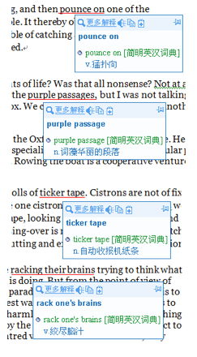
学习英语的时候，常遇到的苦恼之一是 “每个单词都认识，但是拼起来就不明白……”。可是有比这个还可怕的，就是 “以为自己看懂了，而实际上并没有看懂……” —— 我经常说 “你不知道并不可怕，可怕的是你不知道你不知道。” 指的就是这种情况。比如 “purple passage” 这个词组，“purple” 谁都认识，“passage” 谁都认识，于是，如果没有一个像《金山词霸》这样 “智能” 的鼠标辞典（当然前提是在阅读的文本是电子文本而不是印刷版），绝大多数人可能就把自己糊弄过去了，而全然不知 “purple passage” 是一个词组，这个词组的意思是 “词藻华丽的段落”，而不是 “紫色的篇章”。
印象中我第一次被《金山词霸》的这个功能震动，是很多年前某次随手用鼠标划过一篇文章，得知 “birds of prey” 的意思原来是 “食肉鸟，猛禽”，而不是我原来想当然以为的 “被捕食的鸟”（就是本文最初提到的那段文字。后来讲课的时候，把这个当作一个重要的例子，结果发现绝大多数学生与当初的我一样）—— 那一瞬间头皮发麻后背发凉，于是养成了经常用鼠标扫一遍读过的文章的习惯；这些年，因此受益无穷。
5. 把 Word 打造成英语学习利器¶
- MS Word 2007 的 “鼠标取词” 功能
- MS Word 2007 的 “词典面板”
- MS Word 2007 的 “同近义辞典”（Thesaurus）
- MS Word 2007 的 “英语助手”
- 为 MS Word 2007 设置单词朗读功能
- 用 Word 2007 为自己定制阅读文章词汇列表
- 附录:我的常用宏代码
在结绳记事的年代，人类还跟其它动物其实没有太大差异，只有文字出现之后，人类才开始拥有可（跨代）传播、可修正、可积累的所谓 “知识”。所以，书 写工具对人类来实在是太重要。毛笔、鹅毛笔、铅笔、钢笔、圆珠笔 …… 直到今天的各种各样的输入法以及字处理软件（MS Word 就是其中的一种），书写工具的每一次变革都伴随着人类巨大的进步。 对中国学生来说，MS Word 不仅仅是 “字处理工具”，更是一个非常强大的学习利器。
5.1 MS Word 2007 的 “鼠标取词” 功能¶
MS Word 从 2007 版本开始内嵌了 “鼠标取词” 功能。其所采用的词典是权威的《美国传统词典》的英汉版本，释义详实，例句丰富。“默认安装” 的情况下，鼠 标取词功能并未设置为开启状态，需要用户手动开启 —— 在鼠标右键的快捷菜单中选择 “翻译”，而后选定 “中文(中国)”：
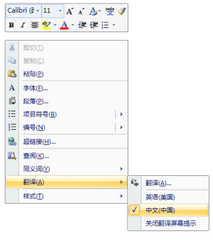
此后，只要将鼠标移至某个英文单词上停留，就会看到该英文单词的中文解释：
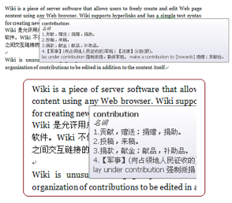
5.2 MS Word 2007 的 “词典面板”¶
在默认情况下，MS Word 有一个快捷键：“Alt + Left Mouse”：先按住 Alt 键，然后在任何一个英文单词上点击鼠标左键，MS Word 的侧边栏里就会显示这个单词的检索结果（这也相当于在该英文单词上点击鼠标右键，而后在快捷菜单中选择 “翻译”->“翻译”）：
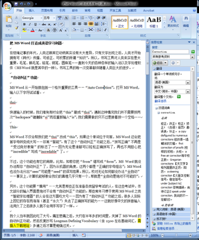
如果用户安装的是 MS Office 中文版，那就可能需要设置一下才可以在文档中通过鼠标左键双击自动选中整个英文单词（“Word 选项”->“高级”->“选定时自动选定整个单词(W)”）：
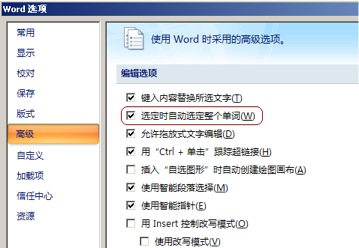
这个词典是英汉、汉英双向的。在文档中选定一个中文词汇，而后在选中的区域使用 “Alt + Left Mouse” 快捷键，右侧就将显示该中文词汇的英文释义。
5.3 MS Word 2007 的 “同近义辞典”（Thesaurus）¶
在任一英文单词上点击鼠标右键，都可以看到一个 “同义词” 快捷菜单。可以通过选中菜单子项而将文档中的词换为该同义词：
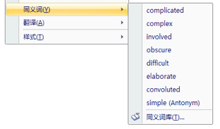
如果想看到更加完整的 “同近义词辞典” 内容，则要在光标移动到某个单词所在的位置之后，按下快捷键 “Shift + F7”；随后就可以在右侧边栏中看到 “同近义词辞典” 的详细内容。 而 MS Word 中还有一个用起来非常方便的 “同近义词查询对话框”，但由于默认情况下没有为它设置相应的呼出快捷键，所以很多用户根本就没有见过它：
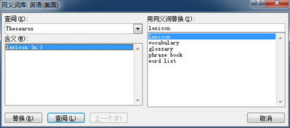
为 “同近义词查询对话框” 添加快捷键的方法如下： * “Word 选项”->“自定义”->“键盘快捷方式自定义”； * 在 “自定义键盘” 对话框中选定：“指定命令”->“类别(C):” 中选择 “所有命令” * 在 “命令(O)” 中选择 ToolsThesaurus， * 在 “请按快捷键(N)” 之下的输入框里点一下鼠标左键，然后同时按下 “Ctrl+Shift+F7”，而后点击左下角的 “指定” 按钮，而后关闭该对话框。（当然，读者可以根据自己的喜好选择快捷键的组合方式……）
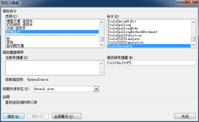
5.4 MS Word 2007 的 “英语助手”¶
事实上，读者可能早就注意到右侧边栏的词典工具中最好的应该是 “英语助手”（而非 “翻译” 命令所呼出的 “双语词典”）。“英语助手” 包括几乎所有的 好东西：“中文释义”（相当于英汉词典）、“英文释义”（相当于英英词典）、“常用搭配”（相当于搭配辞典）和 “同义词”（相当于 Thesaurus）。 如何才能直接呼出 “英语助手” 呢？
其实很简单，方法与上文中 “为同近义词查询对话框添加快捷键” 是一样的。只不过，这次要为 “EngWritingAssistant” 命令添加快捷键。我一般习惯于使用 “Alt+X” 这个在 MS Word 尚未被定义的键盘组合。
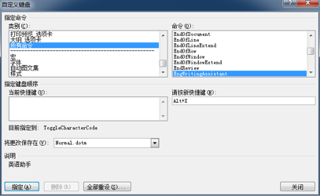
另，MS Word 中的这个 “英语助手”，是必须联网才能使用的，因为它实际上是在查询微软的服务器之后再返回查询结果。服务查询地址是：
http://office.microsoft.com/Research/query.asmx
有编程能力的读者，不妨看看其中的 “Basci Query Option”……
有些人的计算机上的 Office 可能并未安装 “英语助手” 服务，需要用户自己手动添加。在文档任意处 “Alt+鼠标右键” 呼出右侧的工具框，而后点击工具框底部的 “信息检索选项”：
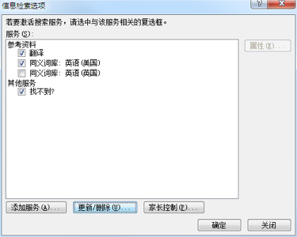
点击左下角的 “添加服务(A)” 按钮，得到以下对话框：
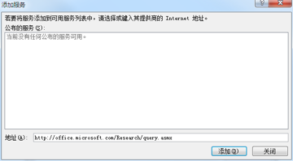
而后在底部 “地址(A)” 之后的文字输入框里输入：“http://office.microsoft.com/Research/query.asmx”而后按“添加”按钮：
点击这个对话框里的 “安装(I)” 按钮即可。
5.5 为 MS Word 2007 设置单词朗读功能¶
这一步稍微复杂一点，因为要为 Word 添加宏代码。 在 Word 程序中，先关闭所有文档，之后按快捷键 “Alt+F11” 呼出 VBA 编辑器。 从菜单 “工具(T)” 中选择 “引用(R)”，在随之跳出的对话框中选中 “Microsoft Speech Object Library”,而后在之前的复选框里打勾:
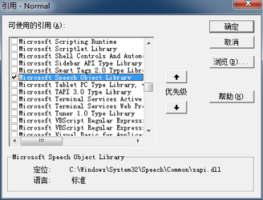
之后再 VBA 编辑器的左侧 “工程” 面板里鼠标双击选定 “Normal – Microsoft Word 对象-ThisDocument”，程序主面板里输入以下 VBA 代码：
Sub SpeakText()
On Error Resume Next
Set speech = New SpVoice
Selection.MoveLeft Unit:=wdWord, Count:=1
Selection.MoveRight Unit:=wdWord, Count:=1, Extend:=wdExtend
If Len(Selection.Text) > 1 Then
speech.Speak Trim(Selection.Text), SVSFlagsAsync + SVSFPurgeBeforeSpeak
End If
Selection.MoveRight Unit:=wdWord, Count:=1
Do
DoEvents
Loop Until speech.WaitUntilDone(10)
Set speech = Nothing
End Sub
按快捷键 “CTRL+S” 保存之后关闭 VBA 编辑器。而后，就可以为这个宏设置快捷键了 —— 我个人选择是 “CTRL+SHIFT+S”。
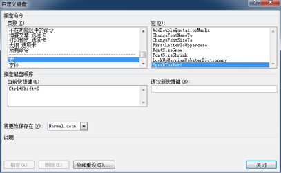
其实，为 Word 编写宏代码非常简单，VBA 的程序代码也比较易读。在当前文档最后的部分，我附加上了我自己最常用的宏代码。
5.6 用 Word 2007 为自己定制阅读文章词汇列表¶
MS Word 还有个很好的功能：“选择格式相似的文本(S)”。这样的话，就可以在阅读一篇英文文章的时候，顺手把生词都标记出来，而后可以通过 “选择格式相似的文本(S)” 把那些已经做了记号的文本单独拷贝出来。
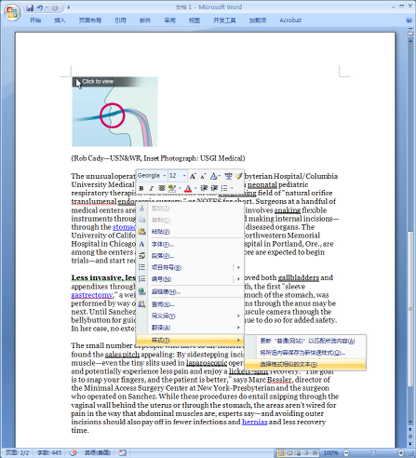
选择之后，按 “Ctrl+C”：
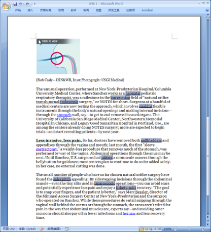
而后，再找个地方 “Ctrl+V”，就可以得到以下的列表：
- neonatal
- burgeoning
- endoscopic
- snaking
- gallbladders
- jabbed
- sales pitch
- laparoscopic
- lickety-split
用之前讲过的同样的方式，也可以为 “选择格式相似的文本（S）” 这个命令设置快捷键 —— 这个功能的命令名称是 “SelectSimilarFormatting”；我一般设定为 “Alt+S”。
在阅读的过程中使用什么格式为文本做标记呢？“加重” 和 “倾斜” 可能并不是好的选择，因为文本中原本就可能有一些这样格式的文字；加高亮底色也不是 好的选择，不知道为什么 Word 的 “选择格式相似的文本(S)” 竟然不支持这种格式。我一般使用 “双下划线”。就象上面的图示里能看到的那样。这次不用自 定义，因为双下划线有 Word 默认设置好的快捷键 “Ctrl+Shift+D”。 去掉所有记号的方法是，在某一个标记了 “双下划线” 的单词上点一下鼠标左键，然后，按刚刚设置好的快捷键 “Alt+S”，而后再按 “Ctrl+Shift+D” 就可以了。
5.7 附录¶
以下是我个人常用的宏的代码：
'要使用该宏，需事先安装Merriam-Webster Collegiate Dictionary
Sub LookUpMerriamWebsterDictionary()
'MWDictionary Macro
Selection.MoveLeft Unit:=wdWord, Count:=1
Selection.MoveRight Unit:=wdWord, Count:=1, Extend:=wdExtend
Selection.Copy
Selection.MoveRight Unit:=wdWord, Count:=1
If Tasks.Exists("Merriam-Webster") = True Then
With Tasks("Merriam-Webster")
.Activate
.WindowState = wdWindowStateNormal
End With
SendKeys "%ep{ENTER}", 1
Else
Response = MsgBox("Task Merriam-Webster doesn't exist! Run the application before use this Macro, please.", vbExclamation, "WARNING!")
End If
End Sub
Sub SpeakTheWord()
On Error Resume Next
Set speech = New SpVoice
Selection.MoveLeft Unit:=wdWord, Count:=1
Selection.MoveRight Unit:=wdWord, Count:=1, Extend:=wdExtend
If Len(Selection.Text) > 1 Then 'speak selection
speech.Speak Trim(Selection.Text), _
SVSFlagsAsync + SVSFPurgeBeforeSpeak
End If
Selection.MoveRight Unit:=wdWord, Count:=1
Do
DoEvents
Loop Until speech.WaitUntilDone(10)
Set speech = Nothing
End Sub
' 为选中的文本加上双引号
Sub AddDoubleQuotationMarks()
Selection.InsertBefore ("“")
Selection.InsertAfter ("”")
Selection.MoveRight Unit:=wdWord, Count:=1
End Sub
' 指定选中文本的字体
Sub ChangeFontNameTo()
Selection.Font.Name = "Georgia"
End Sub
' 指定选中文本的字号大小
Sub ChangeFontSizeTo()
Selection.Font.Size = 28
End Sub
' 将选中文本的字号放大
Sub FontSizeGrow()
Selection.Font.Grow
End Sub
' 将选中文本的字号缩小
Sub FontSizeShrink()
Selection.Font.Shrink
End Sub
' 将双标所在的词汇首字母变成大写
Sub FirstLetterToUppercase()
Selection.MoveLeft Unit:=wdWord, Count:=1
Selection.MoveRight Unit:=wdCharacter, Count:=1, Extend:=wdExtend
Selection.Text = UCase(Selection.Text)
Selection.MoveRight Unit:=wdWord, Count:=1
End Sub
6 .关于韦氏词典¶
美国有很多种韦氏（Webster）词典，比如兰登屋就有一种 “Random House Webster Unabridged Dictionary”。国内学生常提的《韦氏词典》，指的是 “Merriam-Webster Collegiate Dictionary and Thesaurus”。
关于 Merriam-Webster 的权威性，基本上不容置疑 —— 事实上，权威的词典很多，并且都同样权威，比如，牛津的、剑桥的、甚至微软的也都很权威。然而，中国学生常常被告知的 “ GRE 考试的词汇主要依据就是美国韦氏学院辞典!根据统计比较，GRE 反义词所考短语用词大多是 Merriam-Webster 词典中的原话。” 基本上属于以讹传讹。首先，GRE 考试当年的类反题目（现在的 GRE 考试中已经剔除了单纯的词汇题目）中几乎没有考过 “短语用词”。其次，ETS 在设计考试的时候，基本上不会用哪一本词典里的 “原话”。事实上，GRE 考试从来没有把哪一本词典当作唯一的参照物。
Merriam-Webster 的电子版，目前在网上可以找得到的有两种版本：2.5 版和 3.0 版。我个人认为 3.0 版并没有什么真正有意义的改进。2.5 版反倒相对更好用一些。在 emule 上，往往还有很多 50M 左右大小的版本，不要用。首先现在的硬盘都很大，几百兆的空间不值得节省。其次，那 50M 的版本之所以体积小，实际上是因为去除了 Merriam-Webster 的一个最重要的功能 —— “真人发音”。这个词典最好这样安装到电脑上：把光盘里的所有文件拷贝到硬盘的某个目录里面，然后从硬盘上开始安装（否则，以后想听真人发音，就需要光盘总是在光驱里）。
Merriam-Webster 电子版的 “真人发音”，是我个人认为目前可以找到的所有电子版词典中制作最为精良的 —— 发音最清晰（准确当然不用提），音量最稳定。音标，向来被认为是英语学习的重要难点之一，可是，有了 “真人发音” 的电子词典之后，哪怕不懂音标也无所谓了。另外，国内太多的印刷版 “英汉词典” 印表标注都是错误百出的，很误事。比如，recognize，这个单词，其中 “co” 这个音节常被读为[ki]：
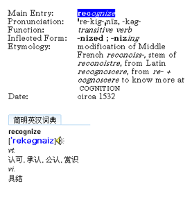
再比如，fortunate 这个单词，很多英汉词典中就多了一个元音/ə/——相当于多了一个音节！
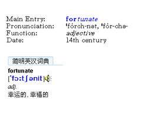
在 Merriam-Webster 查询任何一个单词之后，如果词条是蓝色字体，即意味着说，双击那个蓝色的单词，就可以听到标准发音。
另外，Merriam-Webster 还支持多种检索方法，这是其它词典无法做到的。
- Entry word is…
- Defining text contains…
- Rhymes with…
- Forms a crossword of…
- Is a cryptogram of…
- Is a jumble of…
- Homophones are…
- Etymology includes…
- Date is…
- Verbal illustration contains…
- Author quoted is…
- Function label is…
- Synonymy paragraph contains…
- Usage paragraph contains…
- Usage note contains…
Advanced Searches 内还可以使用 “与(AND)、或(OR)、非(NOT)” 构建比较复杂的搜索表达式。而在 Browse 内，可以搜索 “Entry Word starts with” 和 “Entry Word ends with”……
另外，Merriam-Webster 还有很多图释，比如 sloth 这个词
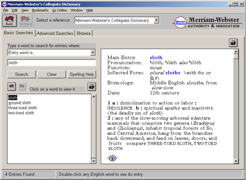
点击那个小眼睛的图标，就可以看到：
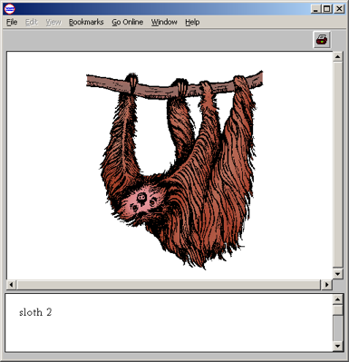
最后，Merriam-Webster 最牛的地方在于它有一个 “Spelling Help”。查找英文单词的时候，一个常见的窘境是，我们只知道某个单词的发音却不知道拼写，于是无法查到那个单词。然而，有了 “Spelling Help”，就非常方便了。比如，我输入 corisbondant 这个显然不是单词的字符串，那么，“Spelling Help” 就根据这个字符串可能的发音给我几个可能的建议 —— 通常情况下，都可以找到我们需要的单词（这个例子中，就是 correspondent）。金山词霸也有类似功能，但不如这个完善。（在金山词霸里面输入 corisbondant，会告诉你：抱歉！本地没有该词条解释，您可以选择以下方式：请到网络查询、给出拼写近似的单词、加入用户词典）
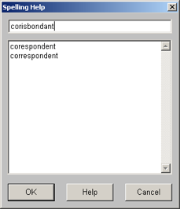
7. Collins Cobuild – Lexicon on CD-ROM¶
柯林斯(Collins)英语词典是英语学习者必备的一部词典。
注意：我所推荐使用的是这部词典电子版的第三版，而非最新的第五版。柯林斯 (Collins)的第五版除了外观花哨一点之外几乎一无是处，大量原本在第三版相当实用的功能被 “砍” 掉了。总是有些软件经过升级之后变得比原来差，类似的例子数不胜数。Office 升级到 2007 之后，其内嵌词典内容竟然没办法 “全部选择”；金山词霸 2005 版之后的版本中竟然 “砍” 掉了它最有用的功能 “全文检索”；Merriam-Webster 的 2.5 版无论如何看不出相对于 3.0 版改进的地方在哪里 …… 朗文(Longman)的新版改进倒是相当明显，可是对我来说用处不大，因为那些实用的功能在 Word 里已经几乎全有了。
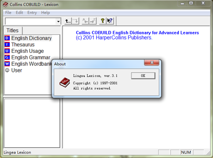
柯林斯的释义方式是最适合英语学习者使用的。比如，“plug” 这个词的第六个释义是这样的：
6 plug plugs plugging plugged
If someone plugs a commercial product, especially a book or a film, they praise it in order to encourage people to buy it or see it because they have an interest in it doing well.
We did not want people on the show who are purely interested in plugging a book or film.
VB
= promote
顺带说，想要知道一个词典释义是否完整，通常去翻翻 plug 的释义就可以了，找到这个 “v. 插播广告；n. 小广告” 的释义的话就说明那个词典的释义收录相当完整。
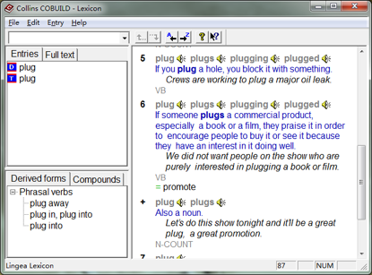
朗文(Longman)曾因设计了一个含有 2200 个词汇的 “Defining Vocabulary” 成为 “Learner’s Dictionary” 的领头羊，牛津(Oxford)随后效仿，最终也有了自己的 “Oxford 3000”；而柯林斯(Collins)本质上来看是更进一步，这种 “if … , …” 的简单句型，实际上恰恰是设计得最妥帖的，最适合第二语言习得者使用的解释方式 —— 当然，柯林斯(Collins)也有自己的 “基础定义词汇集”，只不过名称为 “Most Frequently Used Vocabulary”，分为 1~5 个级别。
柯林斯(Collins)词典也是市面上唯一一个自带可查询语料库的词典。查每个单词的时候，释义中有相应的例句之外，在 “Full text” 标签里有个 “Examples”，通常都有几十个甚至几百个例句，其中的例词被红色高亮，并且在例句之前标注了究竟是 UK written、 UK spoken、US written、US spoken 之中的哪一种。“Example” 之下有若干个图标，其中：
- “D” 图标指的是 “词典释义”(Dictionary)
- “T” 图标指的是 “辞典条目”(Thesaurus)
- “U” 图标指的是 “用法注释”(Usage)
- “G” 图标指的是 “语法讲解”(Grammar)（这是柯林斯词典的一个 “秘密功能”，一会儿有具体讲解）
- “W” 图标指的是 “例句语料库”(WordBank)
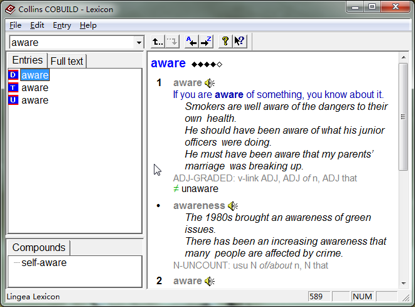
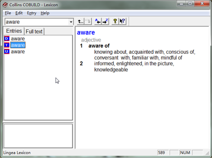
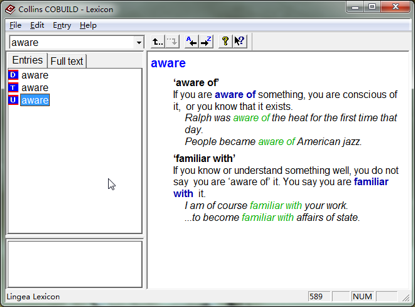
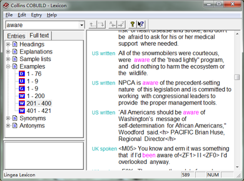
所谓的 “WordBank” 就是柯林斯(Collins)的例句语料库，该词典中包含了这个语料库中含有 50 亿词的有效部分。在柯林斯的网站上，还有这个语料库的一个在线查询工具——只不过对大多数非专业人士来说，这个工具没什么太大的用处。
最好玩的是柯林斯(Collins)第三版中有个未开放的内容，Collins Cobuild English Grammar 的全文电子版。这本书的中译本由商务印书馆出版发行；也是我最推崇的语法书之一。（发现这个功能纯属偶然，是某次敲错了键盘却最终找到了宝。）
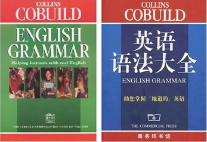
在柯林斯(Collins)词典的输入框里输入”1.1″而后回车，就可以看到词典的第一章第一节。而后可以通过工具栏上的 “A←” 和 “→Z” 图标 “前翻” 和 “后翻”。如果手中有印刷版，想要查看电子版，只需要输入相应章节号码而后回车即可。（这么好的功能在柯林斯第五版里被砍掉了……）
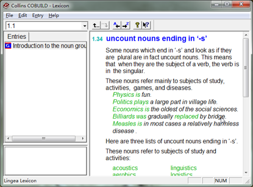
8. Oxford Collocation Dictionary¶
Oxford Collocation Dictionary for Students of English 是一本具有划时代意义的词典。Oxford Phrasebuilder Genie 这个软件包含两个重要的词典，一个是《牛津高级词典》（Oxford Advanced Learner's Dictionary），另外一个则是目前几乎找不到任何其它替代的这本《牛津搭配词典》（Oxford Collocation Dictionary for Students of English）—— 国内的书店里，我只在北京王府井外文书店的四楼看到过有卖这部词典的原版（大约 380 元人民币，含印刷版与 CDROM；另外，一楼有卖 “影印版”，很便宜，几十块钱而已）。2009 年，这本伟大的词典终于出了第二版：
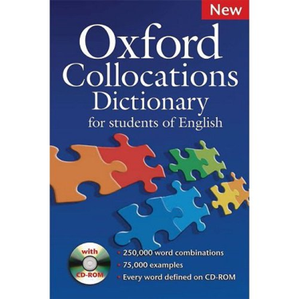
《牛津搭配词典》包含 1 万 5 千个搭配词条。比如，你搜索 “house”，那么就可以看到作为一个名词的 “house” 经常做 “live in, occupy, share, buy, rent, sell……” 等等动词的宾语（VERB+HOUSE）
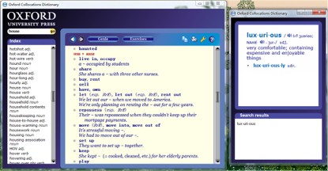
拥有这个词典的好处是，我们可以不再必须依赖外教（实际上从来就依赖不上，也靠不住）学习英语了。想表达什么，就去查。语言的所谓 “地道” 使用，更为关键的是在搭配上 —— 发音、语法等等固然重要，但没有搭配重要。可以试想一下
I hate purple passage with no essential content. （我讨厌金玉其外败絮其中的文章）（passage与purple搭配，或说passage被purple修饰，即构成一个词组，“词藻华丽的文字、段落”）
这句话里面，多少有些语法错误，purple passage，应该是 purple passages[复数]；而 content 也应该是 contents[复数]。但是，即便语法有些错误，一个外国人，把这句有点语法错误的话用不太标准的发音读出来，那么作为交谈对象的以英语为母语的人还是可以一下子完全听懂，沟通即可顺畅完成。这就是搭配的作用。
第二版的界面更加友好，使用起来相对更加方便，查阅时可以随时鼠标左键双击其中的任一单词，而后会跳出一个小对话框，其中是这个单词的释义，并配有真人发音。这是唯一一本我个人认为值得平时闲着没事就拿着印刷版翻翻看的词典 —— 当然电子版也一样。
9. WordNet 和 WordWeb¶
WordNet，是普林斯顿大学的心理学教授乔治•米勒(George A. Miller)于 1985 年开始领导开发维护的一套英语词汇数据库（English lexical database)。截至 2006 年，WordNet 数据库中大小已经超过 12M，包括 15 万词，总计 11.5 万个同义集合，含有 20.7 万个词义条目。这个数据库里的词主要分为四种：名词（nouns）、动词（verbs）、形容词（adjectives）、和副词（adverbs）。数据库的主要结构是以词义（而非以词汇本身为线索）为线索的关系数据库。
1985 年这个项目刚刚启动的时候，获得了 300 万美元的资助。米勒教授后来的职业生涯大多都与 WordNet 有关。1998 年前后，布朗大学（Brown University）的一群教授和学生，用 WordNet 创建了一个 “disambiguator”（用来消除语义分析使所遇到的模棱两可的情况）。以 Jeff Stibel 为首的这群人聘用米勒教授作为董事会顾问，创建了 Simpli 搜索引擎。2000 年，Simpli 被 NetZero 公司以 2350 万美元的价格收购。2003 年，另外一家基于 WordNet 技术而创建的公司 Applied Semantics（这家公司 1998 年的时候叫做 “Oingo”）被 Google 以 1 亿零 200 万美元的价格收购。而后 Google 就拥有了今天它赖以生存的 AdSence 广告业务……
以下是 Wikipedia 上对该数据库结构的简要描述：
- Nouns
- hypernyms: Y is a hypernym of X if every X is a (kind of) Y (canine is a hypernym of dog) （这个相当于中文中所说的 “上义词”）
- hyponyms: Y is a hyponym of X if every Y is a (kind of) X (dog is a hyponym of canine)（这个相当于中文中所说的 “下义词”）
- coordinate terms: Y is a coordinate term of X if X and Y share a hypernym (wolf is a coordinate term of dog, and dog is a coordinate term of wolf)
- holonym: Y is a holonym of X if X is a part of Y (building is a holonym of window)
- meronym: Y is a meronym of X if Y is a part of X (window is a meronym of building)
- Verbs
- hypernym: the verb Y is a hypernym of the verb X if the activity X is a (kind of) Y (to perceive is an hypernym of to listen)
- troponym: the verb Y is a troponym of the verb X if the activity Y is doing X in some manner (to lisp is a troponym of to talk)
- entailment: the verb Y is entailed by X if by doing X you must be doing Y (to sleep is entailed by to snore)
- coordinate terms: those verbs sharing a common hypernym (to lisp and to yell)
- Adjectives
- related nouns
- similar to
- participle of verb
- Adverbs
- root adjectives
对于英语学习者来说，这个数据库并不是很容易直观理解。因为它不是传统意义上的 “词典”（dictionary），也非传统意义上的 “辞典”（Thesaurus），准确地来说，原本是为了英语自动语义识别而打造的一个巨型词义关联数据库。
网上还能找到一个操作界面非常酷、非常炫的 “Thinkmap® Visual Thesaurus”，也是基于 WordNet 数据库的。

不过，这个 TVT 除了酷和炫之外，我个人认为对大多数英语学习者来说并不实用，不方便，没效率。
10. 词汇量不是问题，概念量才是瓶颈¶
总有一天，学生会发现 “词汇量” 实在是最为初级的东西。读文章读不懂的时候，其实更大的障碍是 “概念量”。不知道什么叫做 “double blind test”（“双盲测试”）的人，并不是因为 double、blind、test 这三个词不认识，而是因为不了解这概念究竟指的是什么 —— 当然，一本书里介绍这个概念的章节可能要超过几千字，即，要读懂那几千字之后才能彻底明白 “double blind test” 究竟是什么东西，为什么要依赖它，依赖它的时候又有什么样的限制，等等。再比如说，当一位读者在阅读过程中读到 “unintended consequences” 的时候，如果他不知道这个概念的来历、意味以及在现实生活中、学术界中常常被因之而提及的事例，那么这位读者就不一定会因为他认识 “unintended”、也认识 “consequences” 而必然彻底理解文本的含义。
高级思维活动依赖概念（而非词汇本身）的理解、组织、扩展、应用、重新理解、重新组织、进一步扩展和进一步运用。词汇量等同的人之间概念量却可能存在巨大的差异。不仅概念量有差异，每个人对每一个概念的理解程度也同样存在着各式各样的差异。人与人之间概念量差异大到一定程度之时，哪怕在使用同一种语言的情况下都全然无法沟通 —— 父母与孩子之间、老师与学生之间、作者于读者之间、领导与下属之间、南方人与北方人之间、学者与公众之间都可能如此。
不知道 “double blind test” 这个概念的人，可能被庸医误诊却不自知，不知道 “unintended consequences” 的人，很难摆脱自以为是的习惯，总是因 “我是出于好意” 而好心办坏事……
- 遇到弄不明白 “爱情” 与 “婚姻” 不是一回事儿的异性，最好敬而远之，否则痛苦的一生 “就在不远处等着你”……
- 遇到搞不清 “政府” 与 “国家” 之间区别的人，轻易不要与之沟通，否则你可能会因此发现麻烦不断祸患无穷……
- 不知道 “目标” 与 “计划” 并非一回事的人，并不知道他们自己可能会因为 “死守计划”（Stick to the plan）而最终无法达成目标……
- 没搞清楚 “科学” 与 “科普” 与 “科普作者” 之间相去甚远的人们会骂来骂去 —— 手段比泼妇还不科学……
- 不知道 “上学” 和 “学习” 不是一回事儿的人，其中一些可能会因为自己有博士学位就瞧不起中专毕业的人；反过来，另外一些可能会因为自己只有中专文凭而憎恨那些有博士学位的人……
- 不知道 “一个人” 和 “一个人的看法” 之间的区别的人，要么可能迷信权威，要么可能把自己当作绝对权威……
- 不知道 “Action” 和 “Reaction” 之间的差异的人，弄不好一辈子都是周遭环境的奴隶而已却又完全处于无意识状态……
- 很多学生讨厌历史课，其实只不过是没弄明白 “历史” 与 “历史书” 之间的重要差异……
这就是为什么我们经常听到人们这样形容那些不懂事的人 —— “呀！这人完全没概念！” 这句话也同样可以形容那些逻辑混乱的人。最终，永远是那些能够把概念区分清楚、定义清楚的人才能够想清楚，进而改变整个世界：
- 伽利略想明白了 “运动” 和 “运动的媒介” 是两个概念，应该分别处理，仅此一点本身已经是对现代科学的巨大贡献 2 ；
- 华盛顿他们一帮人想明白了 “三权” 是可以分开的，于是造就了今天的美国
- 邓小平弄清楚了 “政治” 与 “经济” 是可以分开的，于是造就了今天的中国；
- 有程序员想明白原来 “内容” 与 “表现形式” 是可以分开的，于是，“html” 之外分离出来一个 “css” —— 这个互联网都变了……
好像扯远了，其实并不是。这也不是有意耸人听闻，而是再清楚不过的事实。清楚地理解每一个遇到过的概念（管它是中文还是英文），是最为省时间高效率的生活方式。注意，这个习惯不仅仅影响学习，而事实上，它会影响一个人的整个生命过程。因为人毕竟是必须依赖思考才能做出决定的动物。而每一次决定、每一次判断，都依赖对过往存储在自己脑中的各种各样之间关系错综复杂的概念的有效处理。
所以，我常常告诫学生应该经常查询百科，因为它是普通人用来构建概念体系的最基础工具。遇到任何不太了解的概念就到百科上查一查，而后做点笔记，是一生的好习惯。我推荐给学生使用的只有一个，就是Wikipedia。
经常有人对维基百科的权威性抱有顾虑；实际上，2005 年的时候，全球最权威的科学期刊《自然》杂志把 Wikipedia 与《大不列颠百科》的内容精心了一番测试对比，考察了上百个指标，最终得出的结论是双方内容的准确度旗鼓相当；在某些方面 Wikipedia 甚至更胜一筹。
11. 是否一定要用 “英英词典”？¶
很多老师向学生们强调，“为了学好英文，一定要使用英英词典”。我个人对这样的建议并不以为然。事实上，很多学生都是在听到这样的建议之后就那么去做了，最终都 “出师未捷身先死” —— 因为查到的释义之中有更多的生词，“刚刚决心重新做人” 没多久就放弃了。
对一个第二语言习得者来说，很可能一辈子都不用抛弃英汉词典。因为相当数量的概念是任何一种语言里都是对应存在的。比如，apple、cockroach、fool、rock、ticket 等等。在 Merriam-Webster 里这些词汇的释义是这样的：
- apple: the fleshy usually rounded and red, yellow, or green edible pome fruit of a tree
- cockroach: any of an order or suborder (Blattodea syn. Blattaria) of chiefly nocturnal insects including some that are domestic pests
- fool: a person lacking in judgment or prudence
- rock: a concreted mass of stony material; also: broken pieces of such masses
- ticket: a document that serves as a certificate, license, or permit
是以上的释义理解起来快呢？还是以下的释义理解起来更快？
- apple: 苹果
- cockroach: 蟑螂
- fool: 傻瓜
- rock: 岩石
- ticket: 票
不仅后者理解更快，记忆也会更快，总之这么做更有效率，又何必非要放弃更有效率的方式？
确实有一些词，在一种语言中存在，而在另外一种语言中却不存在。比如，hooligan 这个词，这样的时候，解决方法还不是只有看英英词典。Merriam-Webster 的解释是：
hooligan: RUFFIAN, HOODLUM
而这两个词很多学生都可能不认识，再分别查这两个词（鼠标左键双击倒是并不麻烦）
RUFFIAN: a brutal person : BULLY HOODLUM: THUG; especially: one who commits acts of violence
而这里又有一个词不认识，
THUG: a brutal ruffian or assassin : GANGSTER, KILLER
现在基本上都认识了，可是这个词究竟是什么意思，谁能弄明白？
还不如就用金山词霸鼠标指一下：
hooligan: [俚]阿飞, 无赖, 小流氓
如果不甘心，想知道 hooligan 究竟什么来历，那就不妨wikipedia一下好了：
Etymology
There are several theories about the origin of the word hooliganism. The Compact Oxford English Dictionary states that word may originate from the surname of a fictional rowdy Irish family in a music hall song of the 1890s. Clarence Rooks, in his 1899 book, Hooligan Nights, claimed that the word came from Patrick Hoolihan (or Hooligan), an Irish bouncer and thief who lived in the London borough of Southwark. Another writer, Earnest Weekley, wrote in his 1912 book Romance of Words, “The original hooligans were a spirited Irish family of that name whose proceedings enlivened the drab monotony of life in Southwark about fourteen years ago”. There have also been references made to a 19th century rural Irish family with the surname Houlihan who were known for their wild lifestyle. Another theory is that the term came from a street gang in Islington named Hooley. Yet another theory is that the term is based on an Irish word, houlie, which means a wild, spirited party.
——哦，原来人家也弄不明白啊。这种情况下，需要查的是词源、或者干脆找百科，很多的时候已经不是词典的事情了。
另外还有个经典例子就是法语里的 déjà vu；这个含义英文中没有，所以只好直接借用；而中文中我还找不到确切的完整对应的词汇。
经常有人说，必须使用英英词典才能准确领会单词的含义。事实上，这种说法的根源只不过是看对了问题却搞错解决方法，就好像是给病人确诊了脑血栓后却给他做截肢手术一样荒唐。
确实，有些时候我们仅看中文解释无法确定那个单词的确切含义，比如说 “different”、“diverse”、“divergent”、“distinct”、“various” 都是 “不同” 的意思，可是什么时候该用哪个，区别究竟是什么，又应该怎么用呢？可是问题的解决方案并不是去查 “英英词典”，而是去查 “用法词典”、“同义词词典” 和 “搭配词典” —— 而这些词典通常都有英汉版或者英汉双解版。
比如，金山词霸里有《新牛津英汉双解大词典》，用它查询 “different” 这个词结果如下：
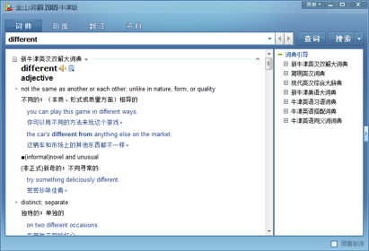
而《现代英汉综合大辞典》中有叫做 “参考词汇”（其实就相当于同义词词典），如下图所示：
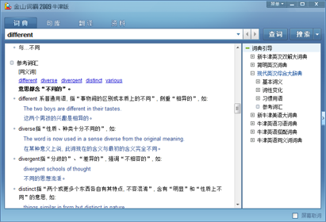
而 Oxford Collocation Dictionary（搭配词典）的查询结果如下图所示：
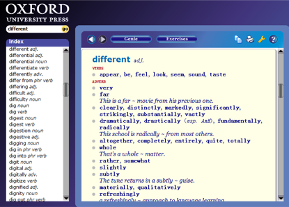
我个人认为这之中搭配辞典最为重要，因为词汇与词汇之间的重要差异实际上就表现为搭配的不同（回顾一下中文 “编” 和 “织” 这两个字的不同是如何体现在搭配上的）。
另外，还要提醒学生不要过分迷信词典。任何语言的词典编纂，某种意义上来看都是 “不得已而为之” 的 —— 因为很多词其实根本不可能用其它词去解释清楚。 举一个反过来证明的例子。《现代汉语大词典》中对 “清秀” 这个词的解释是这样的：“美丽而不俗气”。作为母语使用者，你觉得这样的解释能够让一个学中文的美国人（他听从了中文老师的建议，说 “为了学好中文，一定要使用汉汉词典，而不能使用汉英词典……”）理解么？如果我们遇到一个老外搞不清楚 “清秀” 是什么意思，我们往往并不是让他去查词典，而是使用 “例证法” 向他说明：“对了，那谁谁就挺清秀的……”。
而随着阅读的广度和深度的增加，我们终究会遇到那些用词不但考究，还追求用法新颖的作者。读他们的文字，仅靠词典肯定是不行的。
所以说，想单纯靠 “使用英英词典” 而提高水平的想法其实非常幼稚。而很多的时候，使用英汉版，或者英汉双解版，才是真正有效率的方法。其实，英英词典也好，英汉词典也罢、抑或英汉双解又如何？要查才行。无论哪一个，查了就会有收获，不同的词典对照着查就会有意外收获，查了认真记录就会有终生收获。然而不查就没用。绝大多数人水平不高的原因并非是用的工具不好，而是不会用工具，甚至干脆只拥有工具而从不使用工具。